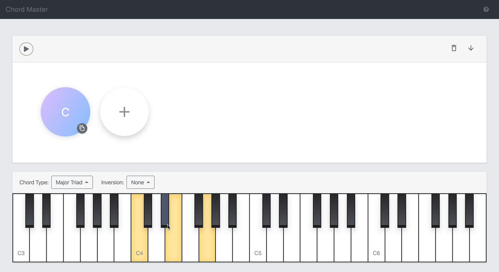
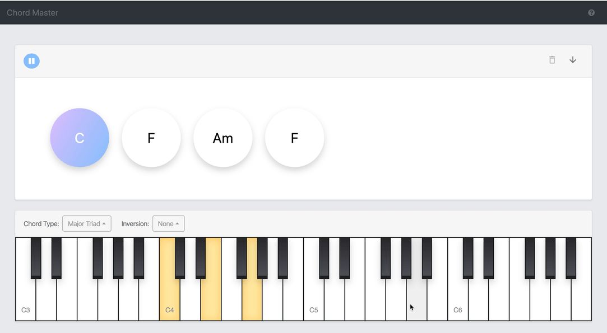

A chord is a combination of notes played together to create a rich harmony. A chord is initialized as a C major chord when it is added. Each chord is represented by a lead sheet symbol in the button of the chord progression interface. Taking “Cm/E♭” as an example, C is the root note of the chord, “m” indicates it is a minor triad, and “E♭” shows it is the first inversion.
Change the chord type: Click the chord type button to open up the dropdown menu. Select the chord family that the chord type is in, and then in the submenu select the chord type. After updating the chord type, the root note will be preserved, and the inversion will be reset to None.
Set the root note: Each notes in the chord is highlighted on the piano. If the chord is inverted, the original root note will be highlighted with a gray color. To set a root note, click a key of the root note on the piano. After that, the highlighted keys, and the chord symbol will be updated, and the sound of the chord will be played.
Inverse a Chord: Chord inversion is a modification on a chord that changes which note is the lowest in that chord. Chord Master allows you to select up to third inversion. To change the inversion, select the inversion number on the inversion dropdown menu. To disable the inversion, select “None” in the dropdown menu.

A chord progression is a sequence of chords that plays together well. You can create, edit, play and save your progression in our app.
Select a chord: You can select a chord by clicking a button in the chord progression. After a chord is selected, the chord button will be highlighted, and the sound of the chord will be played. The chord type, inversion, and the notes will be updated accordingly. The chord is then become editable.
Add a chord: You can add a chord by clicking the + button, then a C major chord will be append after your progression, and the newly added chord will be editable.
Delete a chord: You can delete a chord by clicking the x button on the left top of each chord.
Copy a chord to the end: To repeat a chord, you can click the copy button on the bottom right of each chord. The chord will be copied to the end of the progression, and the copied chord will be editable
Play a chord: To play a chord, you can click the play button, and the chord progression will keep playing in a loop. To stop a chord, click the play button again.
Reset the progression: To clear the progression, you can click the delete button, then a message box will be prompted to ask if you want to reset the progression. If you select yes, the progression will be reset.
Save as the MIDI file: You can download the progression as a MIDI file by clicking the download button. Then, you can import the track to your favorite music working station. The MIDI file uses the piano as the instrument and the half note by default.
Please post an issue in our Github Repository.